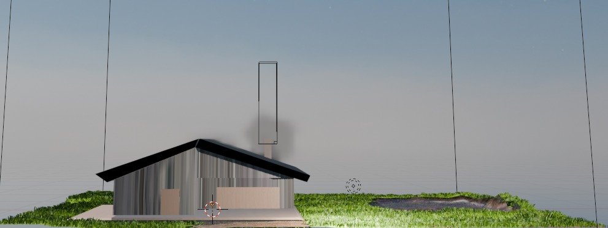
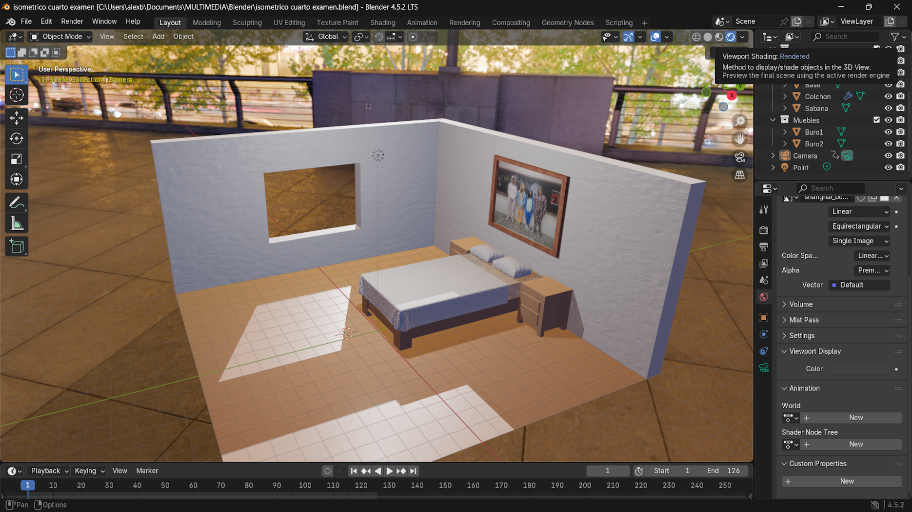
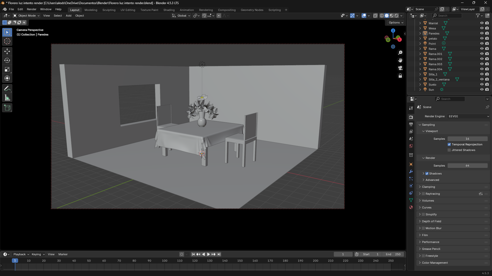
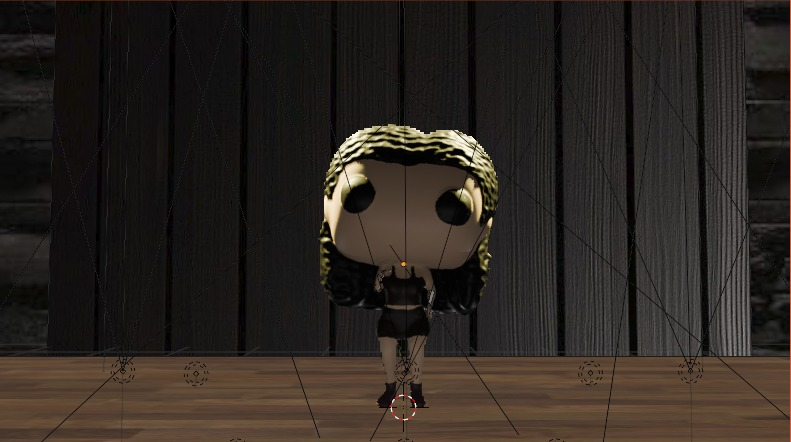

Trabajos de modelado y renderizado en entornos tridimensionales. Esta sección muestra la creación de objetos, escenarios y composiciones digitales, aplicando conceptos de iluminación, textura y perspectiva.

Figura 3d de un caballero del mundo de Silksong.
Diseño 3D hecho por Alejandro en la aplicación de blender. Esta modelado apartir de un solo circulo y con la herramienta de cuchillo para agregar cortes que ayudaron a la construccion de los cuenrnos, se le agregaron texturas de color solido para darle profundidad a los ojos y color a las ropas.

Práctica de modelado 3D de una casa en explosion con Blender.
Diseño 3D hecho por Alejandro en la aplicación de blender. Casa hecha a base de troncos modelados de un circulo cada uno.se agrego un cuadro para el piso al cual se le agregaron divisiones para darle declives o elevaciones además de poder contener un pequeño lago.

Casa que explota con animación de agua incluida.
Diseño 3D hecho por Jocelyn en la aplicación de blender. Casa hecha en base a un cuadrado, con texturas de madera oscura. se agregó un cuadro para el piso al cual se le agregaron divisiones para darle hendiduras o elevaciones además de poder contener un pequeño lago que está en constante movimiento, a su vez en las zonas con textura verde se aplicó la herramienta cabello para agregarle pasto que se mueve también con una física de aire.

Modelado 3D de un cuarto con Blender.
Diseño 3D hecho por Alejandro en la aplicación de blender. Se hizo la base de la cama y el colchón a partir de un cubo agregando capas y nodos para separarlos. La sábana está hecha a partir de un cuadrado con subdivisiones altas y agregando la física de gravedad y colisión para que se ajuste al colchón. Las almohadas son dos cuadrados cosidos y con una herramienta llamada relleno, lo que le da ese efecto de relleno esponjoso. El cuadro está hecho de un cuadrado con textura de madera y una foto.

Modelado 3D de un comedor con Blender.
Diseño 3D hecho por Alejandro en la aplicación de blender. Se usó un cubo como base para la creación de silla separándolo en diferentes capas y de ahí sacando las patas. El florero y la planta se hicieron en otro archivo y se exportó a este, el fondo es una foto libre de derechos sobre París, se ajustó la luz para ser similar, se agregó textura para dar un poco más de realismo.

Modelado 3D de un cuerpo con Blender.
Diseño 3D hecho por Jade en la aplicación de blender. Capa parte del cuerpo está modelado a partir de círculos con la herramienta de extruir, se usa la herramienta cuchillo para darle cortes en diagonal y dar profundidad o redondeo. Se cocieron cada parte al trozo incluyendo cada dedo.

Modelado 3D de un Funko Pop personalizado con Blender.
Diseño 3D hecho por Alejandro en la aplicación de blender. Está modelado a partir de dos cubos con subdivisión de nivel 6. Se esculpio con ayuda de la candidad de nodos puestos y se agrego textura de color base. se apoya de luces de tipo punto para mejorar la luz.

Modelado 3D de un Funko Pop personalizado con Blender.
Diseño 3D hecho por Jocelyn en la aplicación de blender. Está modelado a partir de dos cubos con subdivisión de nivel 6. Se esculpio con ayuda de la candidad de nodos puestos y se agrego textura de color base. se apoya de luces de tipo punto para mejorar la luz.

Modelado 3D de un Funko Pop personalizado con Blender.
Diseño 3D hecho por Jade en la aplicación de blender. Está modelado a partir de dos cubos con subdivisión de nivel 6. Se esculpio con ayuda de la candidad de nodos puestos y se agrego textura de color base. se apoya de luces de tipo punto para mejorar la luz.

Modelado 3D de Halloween con Blender.
Diseño 3D hecho por Jocelyn en la aplicación de blender. Está modelado a partir de un círculo curvando las capas para darle el efecto redondo. tiene una luz dentro de tipo punto para dar el efecto de vela. El fantasma está modelado a partir de un círculo.

Modelado 3D de una bandera elevándose en la lluvia con Blender.
Diseño 3D hecho por Jocelyn en la aplicación de blender. La bandera se construyó con un cuadrado, se usó la herramienta de ropa para darle las físicas como la gravedad. Se ancló la bandera al poste, que está hecho con un círculo, y se agregaron las partículas de lluvia desde un cuadrado en la parte superior que es la que suelta las gotas y el piso tiene una herramienta de eliminar partículas por lo que no traspasan.

Modelado 3D de un jarrón con Blender.
Diseño 3D hecho por Jade en la aplicación de blender. Se usó un círculo y con ayuda de la herramienta extruir se construyó el jarrón, con otro círculo se modeló la rama y las hojas están hechas con un cuadrado. Se usó la herramienta de cabello para añadir y multiplicar la hoja a la rama.

Modelado 3D de un paisaje con Blender.
Diseño 3D hecho por Alejandro en la aplicación de blender. Este proyecto es la construcción de un escenario con varias imágenes jugando con la profundidad de las imágenes y la iluminación.

Modelado 3D de una sala con Blender.
Diseño 3D hecho por Jade en la aplicación de blender. Se usó un cubo como base para la creación de silla separándolo en diferentes capas y de ahí sacando las patas. El florero y la planta se hicieron en otro archivo y se exportó a este, el fondo es una foto libre de derechos sobre París, se ajustó la luz para ser similar, se agregó textura para dar un poco más de realismo.

Fuente 3D con Blender.
Diseño 3D hecho por Jocelyn en la aplicación de blender. Se usó un cubo para hacer la base de la fuente, la cara es una forma preestablecida en blender, se usó la herramienta de creación de agua para llenar la fuente.

Fuente 3D con Blender.
Diseño 3D hecho por Rebeca en la aplicación de blender. Se modeló la fuente a base de un círculo y se usó la herramienta de creación de agua.